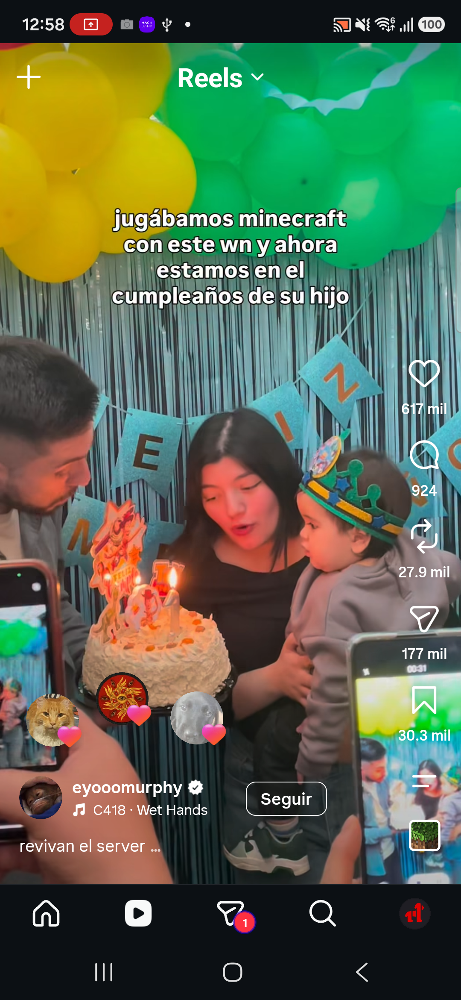
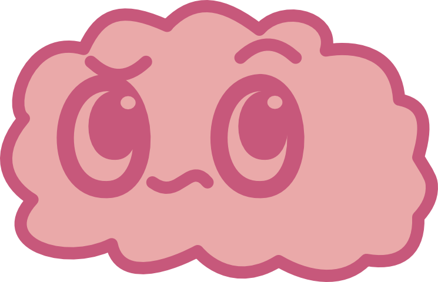
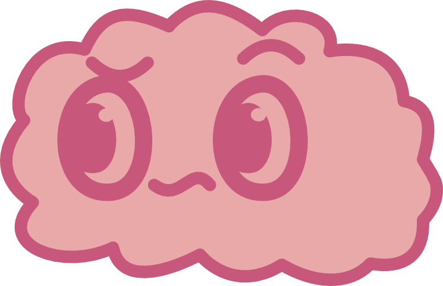
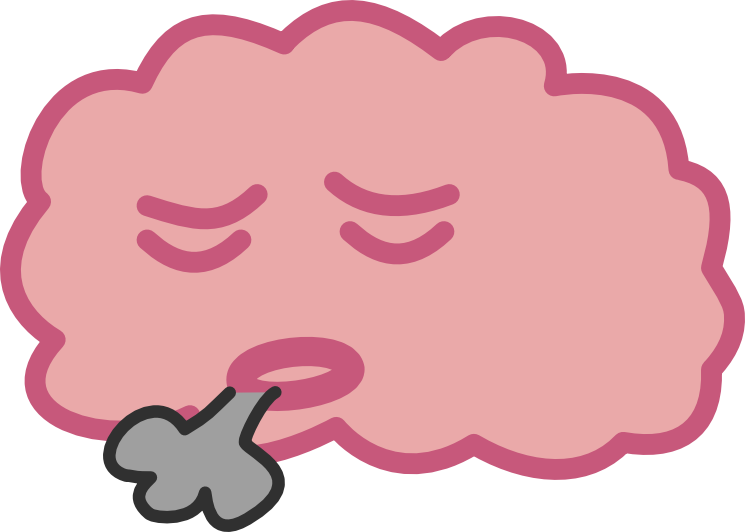
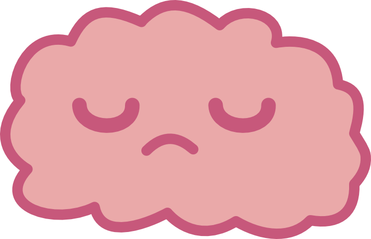
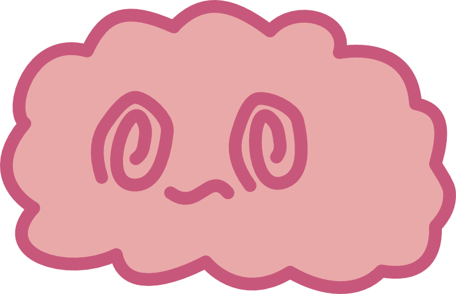
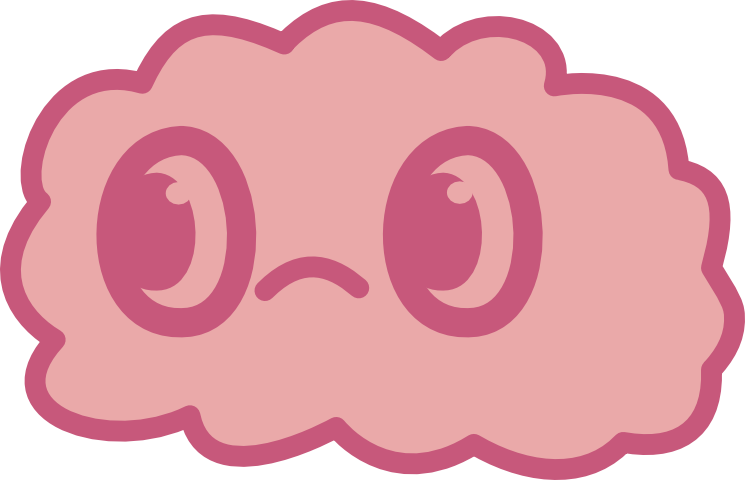
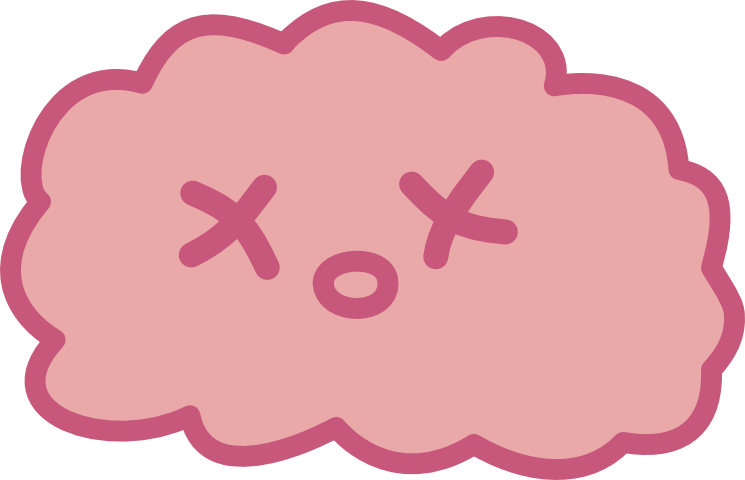

Cautiverio Voluntario: cómo se diseña la libertad
Santiago Gaete Fernández
Seminario de Título · Diseño Industrial · UDP · revisión cruzada
34h perdidas
Al mes, por usuario, solo en TikTok · Kemp, 2024
nadie sabe cuántas decidió
"El diseño de una intervención que introduzca momentos de decisión consciente en el flujo de uso automático del smartphone mediante fricción adaptativa permitirá restituir la capacidad de decisión sobre el comportamiento tecnológico propio del usuario, reduciendo el uso no intencional de forma duradera."
no bloquea · respeta tus decisiones · te ayuda a cobrar conciencia
La intención no es medible.
El origen del contenido sí lo es.
La conciencia anticipada no suprime el deseo (Berridge y Robinson, 1998): por eso la intervención ocurre mientras se scrollea.
PARTE 1
image recognition sobre Instagram
La app pide permiso para grabar la pantalla (MediaProjection) y guarda una imagen de lo que se ve.
Instagram no bloquea la captura. Sin eso, no hay reconocimiento de imagen posible.
Captura difuminada: contenido de terceros.

4 veces por segundo, la app lee 32×32 puntos de la pantalla y compara con la muestra anterior.
No guarda imágenes: guarda cuánto cambió.
| ritmo | 3.7 muestras/s, estable |
| prueba | 83 s en segundo plano |
| eventos | 0.83/s · uno cada 1.2 s |
Dos poblaciones. Ni un valor entre 17 y 25.
Cada punto es un brillo de 0 a 255. Se compara con la muestra anterior y se promedia cuánto cambió.
| punto | antes | ahora | cambio |
|---|---|---|---|
| 1 | 200 | 198 | 2 |
| 2 | 50 | 52 | 2 |
| 3 | 120 | 119 | 1 |
| 4 | 90 | 90 | 0 |
| promedio | 1,25 | ||
| punto | cambio |
|---|---|
| 1 | 150 |
| 2 | 30 |
| 3 | 80 |
| 4 | 110 |
| promedio | 92,5 |
Desde Android 14, grabar la pantalla exige aceptar un diálogo en cada sesión. El reconocimiento de imagen nunca podrá encenderse solo.
Y una intervención que hay que encender a mano no sirve: quien se acuerda de abrirla ya está siendo consciente.
| capa | qué mide | ¿arranca sola? |
|---|---|---|
| Accesibilidad | qué app está adelante, cuánto ocupa lo que se desliza, tiempo, swipes | sí, siempre |
| Captura · modo investigación | cortes de plano por segundo | no, exige el diálogo |
wireframe WF2
PATRÓN OSCURO
78% MATCH
Señalar sin bloquear ni calificar el contenido: la conclusión la saca la persona.
Demo del reconocimiento de imagen sobre un reel: la app marca lo que detecta, sin bloquear ni calificar el contenido.
Si el video no carga acá (sin internet o al imprimir): youtube.com/shorts/HvG0XeTFUXc
PARTE 2
instalada y funcionando en mi celular
La app mira la forma de la pantalla, no lo que muestra: cuánto mide la zona que se desliza y cuánto salta.
Diferencia con Focus Friend y similares: no hay que apretar "iniciar", y no trata igual cualquier uso del teléfono.
Bienvenida: permisos, qué apps mirar y qué te gustaría hacer más.
Arriba, una burbuja con tiempo y ritmo.
La burbuja se agranda: la mascota dice "¿ya?"
El cielo a pantalla completa. Seguir o salir.
El resumen: arrastrado vs buscado, y la semana.
Irse a otra app no corta la sesión: hay 30 s para volver. Bloquear la pausa; más de 3 min, la cierra.
Siempre arriba, con dos datos: tiempo en la app y swipes por minuto, y un cerebro chico que se va gastando con el tiempo.
En ciertos momentos da un salto, se agranda y aparece la mascota con una acción o un diálogo. A los 4 s se recoge.
No recibe toques: Instagram se sigue usando por debajo.

2:2318s/m

relief
serio
drowzy
sad
fNo reta ni castiga: muestra lo que el arrastre le hace. Se va gastando con el tiempo en la app: tranquilo antes de scrollear, frito al llegar al cielo.
Y hay una sola cara buena, relief: la recompensa por salir antes.
| tono que explorar | ejemplo |
|---|---|
| tierno-cercano | "¿ya?" |
| reflexivo-incriminatorio | "¿querías pasar todo ese tiempo en ig?" |
| sarcástico | la mascota es Meta y te agradece el tiempo |
| momento | cuándo | cara |
|---|---|---|
| primer swipe | empieza el arrastre | sus → sad |
| arrastre seguido | 1 min sin parar | pfff |
| ritmo alto | ≥ 20 swipes/min por 30 s | pfff → f |
| 5 min | 5 min en la app | drowzy |
| volviste | reabrir antes de 5 min | sus |
| antes del cielo | 1 min antes | serio → f |
| tras seguir | eligió "Seguir" | sad |
Un estímulo fijo se vuelve invisible. El variable resiste mejor la extinción (Ferster y Skinner, 1957): el mismo principio que te engancha, usado para que la señal no se habitúe.
A los 10 minutos aparece de golpe, a pantalla completa.
No dice cuánto llevas: recuerda lo que hay afuera.
"Seguir" y "Salir" pesan lo mismo. Seguir lo aplaza 10 min; salir lleva al inicio.
El cerebro mira el cielo desde una nube. Si estaba hablando, el cielo espera a que termine.
El clima todavía es fijo. Pregunta abierta: ¿dato real o invitación que vale a cualquier hora?

Aparece al salir, no durante el uso. Es la única pantalla que pide ser leída: no se cierra sola.
Divide la sesión por origen: arrastrado (me lo pusieron) vs buscado (lo elegí), y lo contrasta con la semana.
Arriba, el cerebro: relief si saliste antes del cielo, f si no. Abajo, lo que dijiste querer hacer más, como pregunta: la app no puede medirlo, la cuenta la haces tú.
El costo del uso no se percibe por episodio, sino por agregado.
| supuesto | en el celular |
|---|---|
| "el scroll de reels se reconoce solo" | no se reconocía: Instagram avisa desde vistas chicas → medir también el contenedor y el salto |
| "el resumen sale al volver al inicio" | la sesión sí se cerraba: el reloj de prueba estaba en x1 y faltaba arrastre. Un diario de eventos lo mostró |
| "un swipe = un evento" | cada swipe manda varios avisos → contar por cambio de reel |
| "volver al inicio cierra la sesión" | Instagram avisa una vez más al cerrarse → visita fantasma, corregida |
Modo dev: reloj acelerado (x10, x60) para probar en segundos lo que dura minutos.
no bloquea · devuelve la decisión
Santiago Gaete Fernández